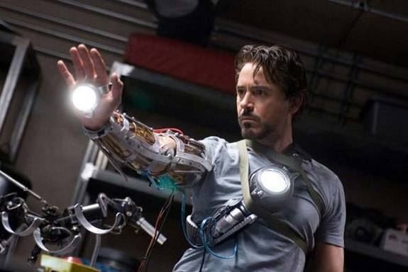

I follow iron man and avengers and i like playing basketball..

something about iron man
Iron Man (Tony Stark) is a fictional superhero appearing in American comic books published by Marvel Comics, as well as its associated media. The character was created by writer and editor Stan Lee, developed by scripter Larry Lieber, and designed by artists Don Heck and Jack Kirby. He made his first appearance in Tales of Suspense #39 (cover dated March 1963). An American billionaire playboy, business magnate, and ingenious engineer, Tony Stark suffers a severe chest injury during a kidnapping in which his captors attempt to force him to build a weapon of mass destruction. He instead creates a powered suit of armor to save his life and escape captivity. Later, Stark augments his suit with weapons and other technological devices he designed through his company, Stark Industries. He uses the suit and successive versions to protect the world as Iron Man, while at first concealing his true identity. Initially, Iron Man was a vehicle for Stan Lee to explore Cold War themes, particularly the role of American technology and business in the fight against communism.[1] Subsequent re-imaginings of Iron Man have transitioned from Cold War themes to contemporary concerns, such as corporate crime and terrorism.[1] Throughout most of the character's publication history, Iron Man has been a founding member of the superhero team the Avengers and has been featured in several incarnations of his own various comic book series. Iron Man has been adapted for several animated TV shows and films. The character is portrayed by Robert Downey, Jr. in the live action film Iron Man (2008), which was a critical and box office success. Downey, who received much acclaim for his performance, reprised the role in a cameo in The Incredible Hulk (2008), two Iron Man sequels Iron Man 2 (2010) and Iron Man 3 (2013), The Avengers (2012) and Avengers: Age of Ultron (2015), and will do so again in Captain America: Civil War (2016) and both parts of Avengers: Infinity War (2018/2019) in the Marvel Cinematic Universe. Iron Man was ranked 12th on IGN's "Top 100 Comic Book Heroes" in 2011,[2] and third in their list of "The Top 50 Avengers" in 2012.
powers and abilities
Armor
Iron Man possesses powered armor that gives him superhuman strength and durability, flight, and an array of weapons. The armor is invented and worn by Stark (with occasional short-term exceptions). Other people who have assumed the Iron Man identity include Stark's long-time partner and best friend James Rhodes;[40] close associates Harold "Happy" Hogan; Eddie March;[112][113] and (briefly) Michael O'Brien. The weapons systems of the suit have changed over the years, but Iron Man's standard offensive weapons have always been the repulsor rays that are fired from the palms of his gauntlets. Other weapons built into various incarnations of the armor include: the uni-beam projector in its chest; pulse bolts (that pick up kinetic energy along the way; so the farther they travel, the harder they hit); an electromagnetic pulse generator; and a defensive energy shield that can be extended up to 360 degrees. Other capabilities include: generating ultra-freon (i.e., a freeze-beam); creating and manipulating magnetic fields; emitting sonic blasts; and projecting 3-dimensional holograms (to create decoys). In addition to the general-purpose model he wears, Stark has developed several specialized suits for space travel,[34] deep-sea diving, stealth,[35][36] and other special purposes. Stark has modified suits, like the Hulkbuster heavy armor. The Hulkbuster armor is composed of add-ons to his so-called modular armor, designed to enhance its strength and durability enough to engage the Incredible Hulk in a fight. A later model, designed for use against Thor, is modeled on the Destroyer and uses a mystical power source. Stark develops an electronics pack during the Armor Wars that, when attached to armors that use Stark technologies, will burn out those components, rendering the suit useless. This pack is ineffective on later models. While it is typically associated with James Rhodes, the War Machine armor began as one of Stark's specialty armors. The most recent models of Stark's armor, beginning with the Extremis Armor, are now stored in the hollow portions of Stark's bones, and the personal area networking implement used to control it is implanted in his forearm, and connected directly to his central nervous system. The Extremis has since been removed,[volume & issue needed] and he now uses more conventional armors. Some armors still take a liquid form, but are not stored within his body. His Endo-Sym Armor incorporates a combination of the liquid smart-metal with the alien Venom symbiote, psionically controled by Stark. Post-Secret Wars, Stark uses a more streamlined suit of armor that can practically 'morph' into other armors or weapons.
Powers
After being critically injured during a battle with the Extremis-enhanced Mallen, Stark injects his nervous system with modified techno-organic virus-like body restructuring machines (the Extremis process).[114] By rewriting his own biology, Stark is able to save his life, gain an enhanced healing factor, and partially merge with the Iron Man armor, superseding the need for bulky, AI-controlled armors in favor of lighter designs, technopathically controlled by his own brain. His enhanced technopathy extends to every piece of technology, limitless and effortlessly due to his ability to interface with communication satellites and wireless connections to increase his "range". Some components of the armor-sheath are now stored in Tony's body, able to be recalled, and extruded from his own skin, at will. During the "Secret Invasion" storyline the Extremis package is catastrophically shutdown by a virus, forcing him again to rely on the previous iteration of his armor, and restoring his previous limitations. Furthermore, Osborn's takeover of most of the few remaining Starktech factories, with Ezekiel Stane systematically crippling the others, limits Tony to the use of lesser, older and weaker armors.[115] After being forced to "wipe out" his brain to prevent Norman Osborn from gaining his information, Tony Stark is forced to have a new arc reactor, of Rand design installed in his chest. The process greatly improves his strength, stamina and intellect. The procedure left him with virtually no autonomic functions: as his brain was stripped of every biological function, Tony is forced to rely on a digital backup of his memories (leaving him with severe gaps and lapses in his long-term memory) and on software routine in the arc reactor for basic stimuli reaction, such as blinking and breathing.[116][117] The Bleeding Edge package of armor and physical enhancement is now equal in power, if not a more advanced, version of the old Extremis tech.
Skills
Tony Stark is an inventive genius whose expertise in the fields of mathematics, physics, chemistry, and computer science rivals that of Reed Richards, Hank Pym, and Bruce Banner, and his expertise in electrical engineering and mechanical engineering surpasses even theirs. He is regarded as one of the most intelligent characters in the Marvel Universe. He graduated with advanced degrees in physics and engineering at the age of 17 from Massachusetts Institute of Technology (MIT)[118] and further developed his knowledge ranging from artificial intelligence to quantum mechanics as time progressed. His expertise extends to his ingenuity in dealing with difficult situations, such as difficult foes and deathtraps, in which he is capable of using available tools, including his suit, in unorthodox but effective ways. He is well respected in the business world, able to command people's attention when he speaks on economic matters, having over the years built up several multimillion-dollar companies from virtually nothing. He is noted for the loyalty he commands from and returns to those who work for him, as well as for his business ethics. Thus he immediately fired an employee who made profitable, but illegal, sales to Doctor Doom.[37] He strives to be environmentally responsible in his businesses. At a time when Stark was unable to use his armor for a period, he received some combat training from Captain America and has become physically formidable on his own when the situation demands it.[119] In addition, Stark possesses great business and political acumen. On multiple occasions he reacquired control of his companies after losing them amid corporate takeovers.[120] Due to his membership in the Illuminati, Iron Man was given the Space Infinity Gem to safeguard.[121] It allows the user to exist in any location (or all locations), move any object anywhere throughout the universe and warp or rearrange space.
Now something about basketball..
Basketball is a sport played by two teams of five players on a rectangular court. The objective is to shoot a ball through a hoop 18 inches (46 cm) in diameter and 10 feet (3.048 m) high mounted to a backboard at each end. Basketball is one of the world's most popular and widely viewed sports.[1] The National Basketball Association (NBA) is the most popular and widely considered to be the highest level of professional basketball in the world and NBA players are the world's best paid sportsmen, by average annual salary per player.[2][3] A team can score a field goal by shooting the ball through the basket during regular play. A field goal scores three points for the shooting team if the player shoots from behind the three-point line, and two points if shot from in front of the line. A team can also score via free throws, which are worth one point, after the other team was assessed with certain fouls. The team with the most points at the end of the game wins, but additional time (overtime) is issued when the score is tied at the end of regulation. The ball can be advanced on the court by bouncing it while walking or running or throwing it to a teammate. It is a violation to lift or drag one's pivot foot without dribbling the ball, to carry it, or to hold the ball with both hands then resume dribbling. As well as many techniques for shooting, passing, dribbling and rebounding, basketball teams generally have player positions and offensive and defensive structures (player positioning). Traditionally, the tallest and strongest members of a team are called a center or power forward, while slightly shorter and more agile players are called small forward, and the shortest players or those who possess the best ball handling skills are called a point guard or shooting guard.
History
In early December 1891, Canadian Dr. James Naismith,[4] a physical education professor and instructor at the International Young Men's Christian Association Training School[5] (YMCA) (today, Springfield College) in Springfield, Massachusetts was trying to keep his gym class active on a rainy day. He sought a vigorous indoor game to keep his students occupied and at proper levels of fitness during the long New England winters. After rejecting other ideas as either too rough or poorly suited to walled-in gymnasiums, he wrote the basic rules and nailed a peach basket onto a 10-foot (3.05 m) elevated track. In contrast with modern basketball nets, this peach basket retained its bottom, and balls had to be retrieved manually after each "basket" or point scored; this proved inefficient, however, so the bottom of the basket was removed,[6] allowing the balls to be poked out with a long dowel each time. Basketball was originally played with a soccer ball. The first balls made specifically for basketball were brown, and it was only in the late 1950s that Tony Hinkle, searching for a ball that would be more visible to players and spectators alike, introduced the orange ball that is now in common use. Dribbling was not part of the original game except for the "bounce pass" to teammates. Passing the ball was the primary means of ball movement. Dribbling was eventually introduced but limited by the asymmetric shape of early balls. Dribbling only became a major part of the game around the 1950s, as manufacturing improved the ball shape. The peach baskets were used until 1906 when they were finally replaced by metal hoops with backboards. A further change was soon made, so the ball merely passed through. Whenever a person got the ball in the basket, his team would gain a point. Whichever team got the most points won the game.[7] The baskets were originally nailed to the mezzanine balcony of the playing court, but this proved impractical when spectators in the balcony began to interfere with shots. The backboard was introduced to prevent this interference; it had the additional effect of allowing rebound shots.[8] Naismith's handwritten diaries, discovered by his granddaughter in early 2006, indicate that he was nervous about the new game he had invented, which incorporated rules from a children's game called "Duck on a Rock", as many had failed before it. Naismith called the new game "Basket Ball".[9] The first official game was played in the YMCA gymnasium in Albany, New York, on January 20, 1892, with nine players. The game ended at 1–0; the shot was made from 25 feet (7.6 m), on a court just half the size of a present-day Streetball or National Basketball Association (NBA) court. By 1897–1898 teams of five became standard.
Professional basketball
FIBA (International Basketball Federation) was formed in 1932 by eight founding nations: Argentina, Czechoslovakia, Greece, Italy, Latvia, Portugal, Romania and Switzerland. At this time, the organization only oversaw amateur players. Its acronym, derived from the French Fédération Internationale de Basket-ball Amateur, was thus "FIBA". Men's basketball was first included at the Berlin 1936 Summer Olympics, although a demonstration tournament was held in 1904. The United States defeated Canada in the first final, played outdoors. This competition has usually been dominated by the United States, whose team has won all but three titles. The first of these came in a controversial final game in Munich in 1972 against the Soviet Union, in which the ending of the game was replayed three times until the Soviet Union finally came out on top.[20] In 1950 the first FIBA World Championship for men, now known as the FIBA Basketball World Cup, was held in Argentina. Three years later, the first FIBA World Championship for Women, now known as the FIBA Women's Basketball World Cup, was held in Chile. Women's basketball was added to the Olympics in 1976, which were held in Montreal, Canada with teams such as the Soviet Union, Brazil and Australia rivaling the American squads. FIBA dropped the distinction between amateur and professional players in 1989, and in 1992, professional players played for the first time in the Olympic Games. The United States' dominance continued with the introduction of their Dream Team. In the 2004 Athens Olympics, the United States suffered its first Olympic loss while using professional players, falling to Puerto Rico (in a 19-point loss) and Lithuania in group games, and being eliminated in the semifinals by Argentina. It eventually won the bronze medal defeating Lithuania, finishing behind Argentina and Italy. The "Redeem Team", won gold at the 2008 Olympics, and the so-called "B-Team", won gold at the 2010 FIBA World Championship in Turkey despite featuring no players from the 2008 squad. The United States continued its dominance as they won gold at the 2012 Olympics and the 2014 FIBA World Cup. Worldwide, basketball tournaments are held for boys and girls of all age levels. The global popularity of the sport is reflected in the nationalities represented in the NBA. Players from all six inhabited continents currently play in the NBA. Top international players began coming into the NBA in the mid-1990s, including Croatians Dražen Petrović and Toni Kukoč, Serbian Vlade Divac, Lithuanians Arvydas Sabonis and Šarūnas Marčiulionis and German Detlef Schrempf. In the Philippines, the Philippine Basketball Association's first game was played on April 9, 1975 at the Araneta Coliseum in Cubao, Quezon City. Philippines. It was founded as a "rebellion" of several teams from the now-defunct Manila Industrial and Commercial Athletic Association, which was tightly controlled by the Basketball Association of the Philippines (now defunct), the then-FIBA recognized national association. Nine teams from the MICAA participated in the league's first season that opened on April 9, 1975. The NBL is Australia's pre-eminent men's professional basketball league. The league commenced in 1979, playing a winter season (April–September) and did so until the completion of the 20th season in 1998. The 1998–99 season, which commenced only months later, was the first season after the shift to the current summer season format (October–April). This shift was an attempt to avoid competing directly against Australia's various football codes. It features 8 teams from around Australia and one in New Zealand. A few players including Luc Longley, Andrew Gaze, Shane Heal, Chris Anstey and Andrew Bogut made it big internationally, becoming poster figures for the sport in Australia. The Women's National Basketball League began in 1981.
JOIN ME ON FACEBOOK
Facebook